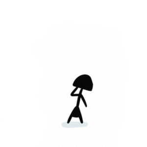
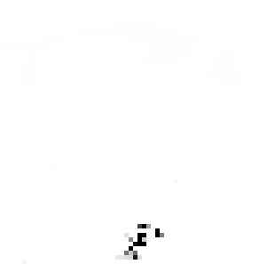

Eva
Eva, pode ser considerada por algumas crenças a primeira mulher criada por Deus, a partir de uma costela de Adão, essa figura feminina foi criada para fazer companhia a Adão, que até então vivia sozinho no Paraíso. Eva é conhecida por ter cedido a tentação da serpente e ter comido do fruto proibido, o que acarretou a expulsão dela e de Adão de forma definitiva do paraíso, foram castigados também com vários outros males, que até hoje são carregados pela humanidade, seus descendentes. A Eva de Carlos Ruas, é considerada carinhosa, maternal e muito inteligente, está condenada a passar a eternidade ao lado de seu companheiro Adão e de Deus, seu criador, além disso, cuida de Caim, seu filho. Eva é constantemente mal interpretada, pois, convive com figuras masculinas que tem uma visão bastante limitada acerca da mulher
Adão
Segundo a Bíblia, Adão foi a primeira criação humana de Deus, que o fez a sua semelhança a partir do barro, esse primeiro ser humano, deveria viver no paraíso junto de sua companheira Eva, usufruindo da melhor vida possível, desde que, não provassem do fruto proibido, que seria ofertado a eles constantemente como tentação, seu único desafio deveria ser evitá-lo, caso caíssem em tentação, seriam condenados a expulsão do Paraíso para sempre. Adão, retratado por Carlos Ruas, pode ser considerado um ser ingênuo, ao mesmo tempo cheio de malandragem, bastante mulherengo e sincero. Adão lembra muito personagens de filmes de ação, aqueles com uma fala cheia de efeitos e com o queixo quadrado, sempre prontos para fazer a primeira besteira que passa por sua cabeça. Sim, este é o Adão, apesar dos traços de seu desenho retratá-lo da maneira mais simples possível, esse fácil imaginá-lo como um galã, um pouco desastrado e apaixonado por sua companheira Eva.